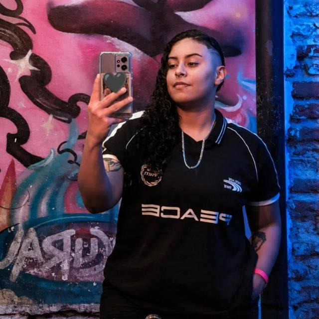
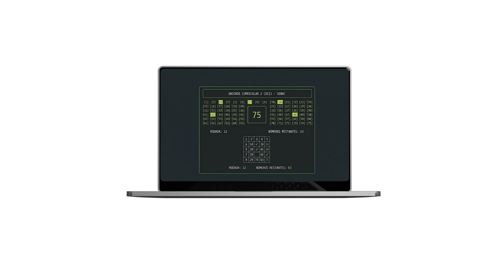
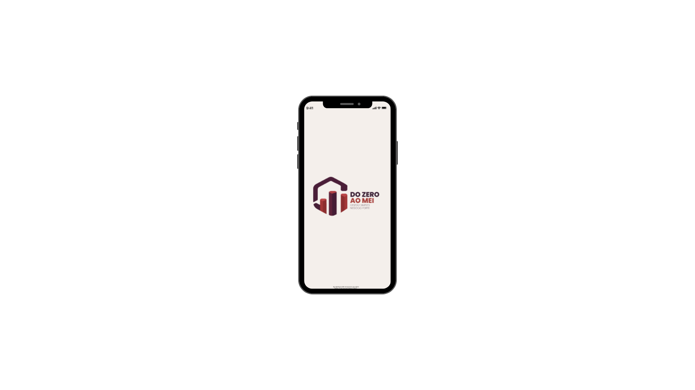
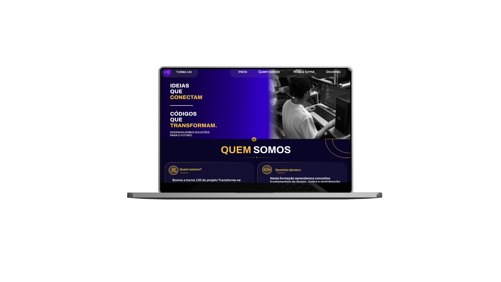

Bem vindos,
Eu sou Sabrina!
Desenvolvedora Front-end
Transformo ideias em interfaces
modernas, funcionais e intuitivas.
Desenvolvedora Front-end
Transformo ideias em interfaces
modernas, funcionais e intuitivas.

QUEM SOU EU?
Eu sou Sabrina, tenho 24 anos e estou ingressando no mundo da programação.
Explorando novas possibilidades, minhas habilidades e construindo minha trajetória na tecnologia.
Escola Técnica Estadual Governador Eduardo Campos — Concluído em 20 de dezembro de 2023.
Principais conhecimentos: Banco de Dados e Lógica de Programação.
Faculdade SENAC — Durante o curso, estou aprimorando meus conhecimentos em HTML, CSS e JavaScript, criando projetos voltados para o desenvolvimento web.
Ver detalhes
Projeto desenvolvido como atividade avaliativa da Unidade Curricular 2 (UC2) do curso de Programação do SENAC, utilizando JavaScript e Node.js para implementar um sistema de Bingo executado no terminal.

O Do Zero ao MEI é uma plataforma criada para apoiar microempreendedores e pessoas que estão começando a empreender; oferecendo apoio burocrático, mentorias e orientações para o desenvolvimento do negócio. Atuei no desenvolvimento Back-end, na tela de Login, trabalhando com o gerenciamento e validação dos dados dos usuários.

Projeto desenvolvido pela Turma 130 do projeto Transforme-se, com o objetivo de apresentar a turma, suas integrantes, competências, formações, experiências, interesses profissionais e a trajetória do aprendizado durante a formação em desenvolvimento Front-end.
TECNOLOGIAS & FERRAMENTAS
Estruturação semântica e desenvolvimento web.
Estilização, Flexbox, Grid e layout responsivo e Bootstrap.
Manipulação de DOM, lógica de programação e interatividade.
Desenvolvimento no lado do servidor
Controle de versão e trabalho colaborativo.
Conceitos de modelagem e consultas SQL.